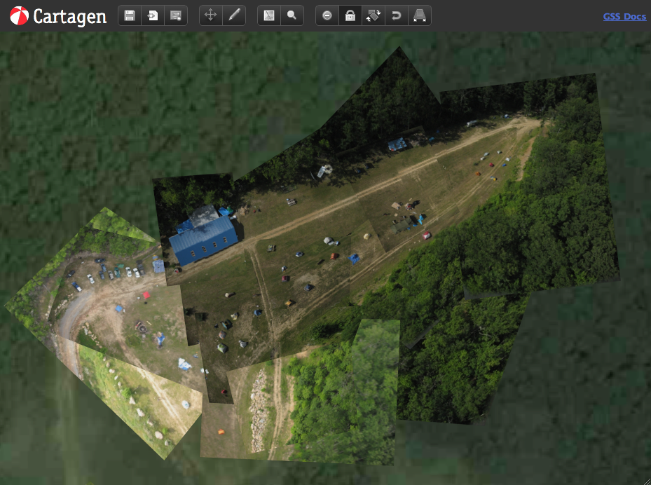

As discussed in Section 5.1, most digital maps today employ a server-side caching mechanism providing a tiled image collection. The tiles are assembled seamlessly in the user's browser, and zooming is accomplished by maintaining multiple tilesets -- one for each zoom level. The resulting system scales predictably, as tiles do not vary dramatically in file size, and can be served using Apache or even stored locally. While this works well for a single dataset such as terrain contours, it commits the map to a single representation. Multiple tile sets can be stacked, and polygons can be overlaid, but most importantly, the user cannot edit the tiles or manipulate the data they contain. Compressing data into tiles strips them of their metadata and authorship information in favor of scalability and consistency.
Diagram of Cartagen vs. Existing geostack
To sidestep many of these requirements, and to allow users to participate fully in the authoring of maps, I created the Cartagen framework. Using new techniques made possible by widespread browser support for HTML5 and specifically the Canvas element, Cartagen can create maps which are not pre-rendered, but generated on-the-fly. This frees the map from a single projection or representation, and enables a more dynamic, interactive, and narrative cartographic style. Discrete vector data (made up of points, lines, and areas) can be downloaded in JSON format just once, and displayed at any scale and in any style. Recent increases in JavaScript execution speed [JavaScript speed stats] make possible relatively high framerates ( 15fps on a typical machine), obviate the need for browser plugins like Flash or Java, and make dynamic HTML5 mapping accessible even on mobile devices such as on the iPhone, Android, and Windows Mobile platforms. As an added advantage, Cartagen performs much of the work of map display locally, reducing dependence on high-latency internet connectivity. It also allows users to easily download data and view or edit it offline. These features make it particularly appropriate for use in developing countries or in crisis situations.
(usage restrictions in Google Maps and similar services)
| r0.5

|
The Cartagen framework represents an alternative system which is optimized for user-created content, rather than one-to-many broadcast publishing. As a fully scriptable cartographic environment, however, it was also uniquely suited for building an image orthorectification tool. The Canvas element is essentially a pixel raster, but because Cartagen's primitives are vector objects stored as points and polygons, it there is no need to store resampled source imagery while performing distortions or transforms. While in Photoshop, a powerful computer is required to store, manipulate, and export a map of any considerable size (maps made for the BP oil spill project were over 50,000 px in each dimension), Cartagen can be used to orthorectify using a laptop or even a low-power netbook. Users in effect see a lower-resolution preview rendered only at the size of their browser window, and a final, high-resolution composite image is created using ImageMagick on the server side. This lowers the cost of the equipment to process and orthorectify aerial imagery by thousands of dollars.
Cartagen makes use of open standards such as JSON, OSM-XML, and GeoJSON, and can be used to generate GeoTIFFs or even a TMS tile service. In addition, because it can store and display both raster and vector data, once images are rectified, the pen tool can be used to trace streets, buildings, and borders.
Another unique part about Cartagen is that it allows users to style vector map data using a stylesheet, in a syntax similar to that of CSS. This is intendd to mirror the content vs. style relationship between HTML and CSS, and in fact the map stylesheet format Cartagen uses is called GSS. This is intended to leverage the widespread literacy in web design and provide a scaffolding for those just beginning to make their own maps with these tools.
Illustration of GSS